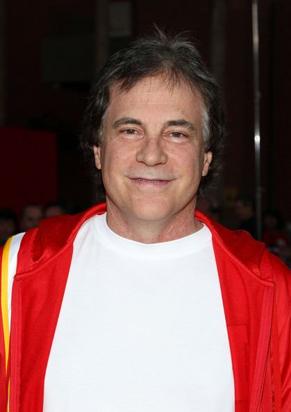
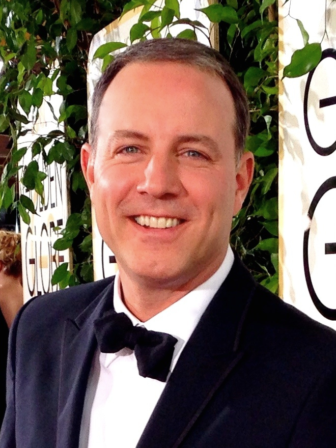

O filme " A Jornada de vivo" foi criado pelos autores:
Autora:Quiara Alegria Hudes

Autor:Peter Barsocchini
Dirigido pelos autores:

Diretor:Kirk Demicco
Co-diretor:Brandon Jeffords
Sobre o filme: A jornada de Vivo é um filme de animação digital do gênero comédia musical estadunidense de 2021, produzido pela Sony Pictures Animation. O filme marca o primeiro musical da Sony Pictures Animation.
O filme foi apresentado pela primeira vez à DreamWorks Animation em 2010 por Miranda, mas foi cancelado devido à reestruturação da empresa em 2015. Mais tarde, foi revivido pela Sony Pictures Animation em 14 de dezembro de 2016.
Vivo foi lançado em cinemas selecionados em 30 de julho de 2021 nos Estados Unidos e digitalmente na Netflix em 6 de agosto de 2021. O filme recebeu críticas geralmente positivas da crítica, que elogiou a animação, as vozes e os números musicais.Vivo é um amigavél jurupará, ele é um pequeno mamífero (tradicional da América Latina).
Sinopse:O personagem Vivo é um jurupará apaxonado por música, junto com seu companheiro (dono) Andrés, eles passam o dia juntos tocando e dançando em uma multidão de pessoas no centro da praça. Embora eles não falem a mesma língua, Vivo e Andrés são peças que se encaixam, sendo uma dupla musical perfeita em meio ao amor pela música.
No filme Andrés recebe uma carta de um antigo amor Sr.Marta Sandoval convidando-o para participar e cantar com ela no seu último show antes de se aposentar. Andrés fica com esperança de a reencontrar, já vivo fica confuso e não querendo ir com ele.
Após algum tempo Andrés vem a falecer, assim não havendo o encontro com Marta, Vivo fica muito mal e vai atrás de Marta para entregar uma carta de amor em forma de música que Andrés fez antes deles nunca mais se verem.
Em meio as buscas a possibilidade de viajar para encontrar Marta, Vivo encontra Gabi uma menina superenergéica e precisa de sua ajuda para chegar lá.